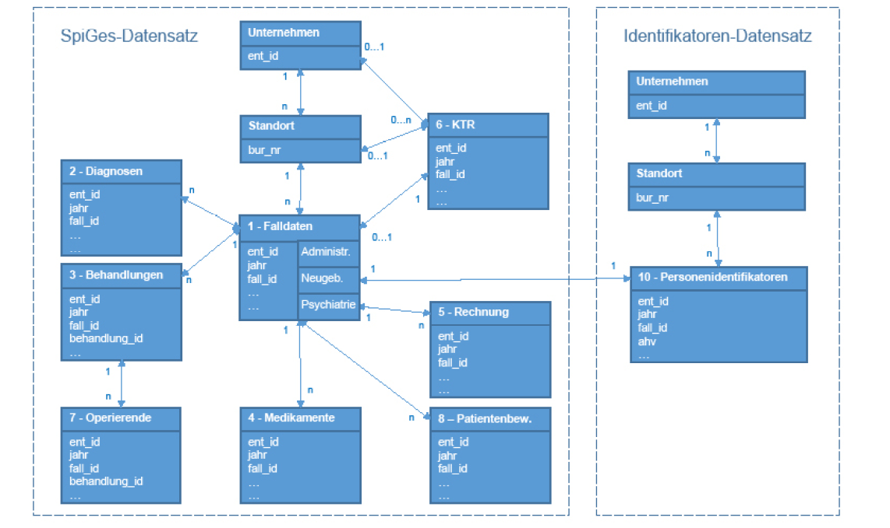

G00 Erhebung Spitalstationäre Gesundheitsversorgung (SpiGes) und medizinische Kodierung
G01n Geschichte
Der Verband schweizerischer Krankenanstalten VESKA, als Vorgänger der H+ Die Spitäler der Schweiz, sammelte bereits seit 1969 Daten im Rahmen eines Projektes Spitalstatistik. Die Diagnosen und Behandlungen wurden mit den VESKA-Kodes kodiert, die auf der ICD-9 basierten. Daraus resultierte eine Statistik für die Spitäler. Die Daten waren auf nationaler Ebene nicht repräsentativ, da sich nur einige Kantone für die Erhebung der Daten gesetzlich verpflichteten.
1997/1998 wurde eine Reihe von Statistiken der stationären Betriebe des Gesundheitswesens auf nationaler Ebene ins Leben gerufen. Diese basieren auf das Bundesstatistikgesetz (BstatG, SR 431.01) vom 09. Oktober 1992 und der zugehörigen Statistikerhebungsverordnung (SR 431.012.1) vom 30. Juni 1993. Das Bundesamt für Statistik (BFS) erhebt und veröffentlicht seither Daten der Medizinischen Statistik der Krankenhäuser (MS), die über Patientinnen und Patienten in den Schweizer Spitälern Auskunft geben.
Diese Erhebung wird durch eine administrative Statistik der Krankenhäuser / Krankenhausstatistik (KS) ergänzt. Gleichzeitig erhoben aber auch die Tariforganisation SwissDRG AG, Krankenversicherungen, der Spitalverband H+, die Kantone und das BAG Daten zu denselben Inhalten. Mit der Nationalen Datenbewirtschaftung (NaDB) beschloss der Bundesrat am 27. September 2019 eine Strategie zur Vereinheitlichung und Vereinfachung solcher Prozesse. Das Ziel der Strategie ist die einmalige Erhebung der Daten und deren Mehrfachnutzung. Mit dem Projekt «Spitalstationäre Gesundheitsversorgung» (SpiGes) wurde dieses Vorhaben für die stationären Spitaldaten als Pilotprojekt im Rahmen des NaDB-Programms umgesetzt.
Die Daten der MS, der Fallkostenstatistik (FKS) sowie Teile der KS werden ab 2025 einheitlich erhoben und allen Berechtigten gemäss ihren Nutzungsrechten durch das BFS zur Verfügung gestellt.
Die damit verbundene Datenerfassung erfolgt gemäss SpiGes ab dem 01. Januar 2024.
Eine Statistik der sozialmedizinischen Institutionen mit administrativen Daten und Angaben zu den Klientinnen und Klienten der Alters- und Pflegeheime, der Heime für Behinderte, der Heime für Suchtkranke und der Betriebe für Personen mit psychosozialen Problemen vervollständigen das Angebot im stationären Bereich.
Die Kodierung der Diagnosen und Behandlungen in den Spitälern ist ein essenzieller Baustein für die Beantwortung folgender Fragen:
• Wie ist der Gesundheitszustand der Bevölkerung, mit welchen gesundheitlichen Problemen ist sie konfrontiert und wie schwerwiegend sind die Probleme?
• Wie verteilen sich die Probleme auf unterschiedliche Anteile der Bevölkerung (nach Alter, Geschlecht und weiteren Angaben, die nach heutigem Wissen zu Unterschieden führen, wie zum Beispiel Bildung, Migration, …)?
• Welchen Einfluss haben die Lebensumstände und die Lebensweise auf die Gesundheit?
• Welche Leistungen der Gesundheitsversorgung werden in Anspruch genommen? Wie verteilt sich die Inanspruchnahme auf unterschiedliche Anteile der Bevölkerung?
• Wie entwickeln sich die Kosten und die Finanzierungsströme?
• Über welche Ressourcen verfügt das Gesundheitswesen (Infrastruktur, Personal, Finanzen) und welche Dienstleistungen bietet es an?
• Welchen Bedarf an Dienstleistungen im Gesundheitsbereich gibt es aktuell und wie wird er sich voraussichtlich entwickeln?
• Welches sind die Folgen/Auswirkungen von Massnahmen, die auf politischer Ebene getroffen werden?
G02m Organisation
Die Sektion Gesundheitsversorgung GESV des Bundesamtes für Statistik ist für die Erhebung Spitalstationäre Gesundheitsversorgung (SpiGes) verantwortlich. Die statistischen Ämter der Kantone, die Statistikabteilungen der Gesundheitsdirektionen der Kantone koordinieren kantonsweit die Datenerhebung in den Spitälern. Diese Stellen informieren die Leistungserbringer über die Fristen zur Datenlieferung und überwachen deren Einhaltung. Sie sind verantwortlich für die Einhaltung der Lieferfristen sowie die Qualitätsprüfung, Plausibilisierung und Freigabe auf der SpiGes Plattform.
Die Spitäler sammeln die Daten der Patientinnen und Patienten an zentraler Stelle. Sie erstellen den Datensatz mit den kodierten Diagnose- und Behandlungsangaben. Sie sind gesetzlich zur Bereitstellung der Daten verpflichtet. Das BFS informiert die kantonalen Erhebungsstellen über die zu liefernden Daten, das Format der Daten und wie diese übermittelt werden müssen. Die Kantone sind verpflichtet, diese Informationen den Spitälern weiterzuleiten. Die Vorgaben sind auch auf der Webseite des BFS veröffentlicht.
G03m Gesetzliche Grundlagen
Die Erhebung Spitalstationäre Gesundheitsversorgung (SpiGes) basiert auf dem BStatG sowie der Statistikerhebungsverordnung, die die Vorschriften über die Durchführung von statistischen Erhebungen des Bundes enthalten und sich auf das Bundesgesetz über die Krankenversicherung vom 18. März 1994 (KVG, SR 832.10) stützt.
Das BStatG bestimmt, dass die Einrichtung von Gesundheitsstatistiken eine Aufgabe auf nationaler Ebene ist (Art. 3 Abs. 2b), die die Zusammenarbeit von Kantonen, Gemeinden und anderen involvierten Partnern erfordert. Der Bundesrat kann nach Artikel 6 Abs. 4 die Teilnahme an einer Erhebung als obligatorisch erklären.
Im Anhang der Statistikerhebungsverordnung werden die für die verschiedenen statistischen Erhebungen verantwortlichen Organe benannt. Jede nationale statistische Erhebung wird im Anhang einzeln beschrieben. Im Falle der Erhebung Spitalstationäre Gesundheitsversorgung (SpiGes) wurde das BFS als für die Erhebung verantwortliches Organ bestimmt. Die Verordnung präzisiert auch die Bedingungen für die Umsetzung, unter anderem den verpflichtenden Charakter dieser Erhebung. Sie bestimmt, dass für die Erfassung der Diagnosen die Klassifikation ICD und der Behandlungen die Schweizerische Operationsklassifikation (CHOP) zu verwenden sind.
Neben dem BStatG bestimmt auch das KVG die Erhebung. Nach dem KVG sind die Spitäler und die Geburtshäuser verpflichtet, den zuständigen Bundesbehörden die Daten bekannt zu geben, die benötigt werden, «um die Anwendung der Bestimmungen dieses Gesetzes über die Wirtschaftlichkeit und Qualität der Leistungen zu überwachen» (Art. 59a Abs. 1). Die Daten werden stellvertretend für das Bundesamt für Gesundheit (BAG) vom BFS erhoben und die Angaben sind von den Leistungserbringern kostenlos zur Verfügung zu stellen (Art. 59a Abs. 2 u. 3). Ausserdem bestimmt das KVG, dass das BFS die Angaben dem Bundesamt für Gesundheit, dem Eidgenössischen Preisüberwacher, dem Bundesamt für Justiz, den Kantonen und Versicherern sowie einigen anderen Organen je Leistungserbringer zur Verfügung stellt (Art. 59a Abs. 3 KVG). Die Daten werden vom BAG pro Kategorie oder pro Leistungserbringer (pro Spital) veröffentlicht. Resultate, die die Patientinnen und Patienten betreffen, werden nur anonym veröffentlicht, so dass keine Rückschlüsse auf einzelne Personen gezogen werden können.
G04m Ziele der Erhebung Spitalstationäre Gesundheitsversorgung (SpiGes)
• Die epidemiologische Überwachung der Bevölkerung soll ermöglicht werden (Spitalpopulation). Die Daten liefern wichtige Informationen über die Häufigkeit wichtiger Krankheiten, die zu Spitalaufenthalten führen und ermöglichen die Planung und gegebenenfalls die Anwendung von präventiven oder therapeutischen Massnahmen.
• Die Weiterentwicklung des Fallpauschalensystems soll in einem jährlichen Rhythmus möglich sein.
• Die Wirtschaftlichkeit der Spitäler kann mit den SpiGes Daten gemäss den geltenden Methoden verglichen werden. Diese Vergleiche können für die Verhandlung, Festsetzung und Beurteilung der Tarife genutzt werden.
• Ausserdem erlauben die erhobenen Daten eine allgemeine Analyse der von den Spitälern erbrachten Leistungen und ihrer Qualität. Als Beispiel ist die Häufigkeit bestimmter Operationen oder die Häufigkeit von Rehospitalisierungen bei bestimmten Diagnosen oder Behandlungen zu werten.
• Die Daten erlauben es auch, einen Überblick über die Versorgungslage im Bereich der Spitäler zu erhalten. Zum Beispiel können Einzugsgebiete einzelner Spitäler dargestellt werden. Damit dienen die Daten der Versorgungsplanung auf kantonaler und interkantonaler Ebene. Es werden Daten für die Erforschung spezieller Fragestellungen und für die interessierte Öffentlichkeit geliefert.
G05m Anonymisierung der Daten
Das BFS darf gemäss Art. 153c AHVG die AHV-Nummer als Personenidentifikator verwenden. Dabei werden sämtliche Rahmenbedingungen zum Schutz der Personendaten eingehalten. Es werden umfangreiche technische und organisatorische Massnahmen zur Gewährleistung des Datenschutzes und der Anonymität der Personendaten getroffen. So werden z.B. die Personenidentifikatoren (AHV-Nummer) in einem separaten File übermittelt und auf der Plattform umgehend anonymisiert.
G06m Der medizinische Datensatz, Definitionen und Variablen
Seit der Einführung von SpiGes werden die Variablen im KHB mit dem entsprechendem Variablennamen benannt.
Die Daten der Erhebung Spitalstationäre Gesundheitsversorgung (SpiGes) enthalten verschiedene Datensätze (Tabellen) mit unterschiedlicher Granularität.
Im Zentrum steht die Tabelle «Falldaten», die Informationen umfasst, die einmal pro Fall vorliegt. Weitere Tabellen sind «Diagnosen», «Behandlungen», «Medikamente», «Rechnung», «KTR», «Operierende» und «Patientenbewegungen». Die Tabelle «Personenidentifikatoren» hat zwar den gleichen Detailierungsgrad wie die Falldaten, sie ist jedoch aus Datenschutzgründen in einem separaten File zu liefern. Die Zusammenhänge der Tabellen können der folgenden Abbildung entnommen werden:

Nicht alle Variablen müssen für alle Fälle (Zeilen) ausgefüllt werden. Für jede Variable ist in der Schnittstellenbeschreibung angegeben, wann sie ausgefüllt werden muss. So müssen z.B. die Angaben für Neugeborene oder Psychiatriepatienten nur für entsprechende Fälle ausgefüllt werden.
Daneben kann die kantonale Erhebungsstelle weitere Auflagen machen, unter anderem einen Kantonsdatensatz einfordern. Kantonale Vorgaben werden nicht durch das BFS beschrieben und hier auch nicht weiter ausgeführt.
Eine Beschreibung der Variablen und der Schnittstelle findet sich auf der Webseite des Bundesamtes für Statistik:
https://www.bfs.admin.ch/bfs/de/home/statistiken/gesundheit/gesundheitswesen/projekt-spiges.html
G10p Erhebung Spitalstationäre Gesundheitsversorgung (SpiGes), die Patientenklassifikationssysteme SwissDRG, TARPSY und ST Reha
Seit 2012 wurde die Vergütung der Spitäler auf eidgenössischer Ebene schrittweise auf das Fallpauschalensystem, resp. Tagespauschalensystem umgestellt – zuerst für akutsomatische Leistungen (SwissDRG, 2012), dann für psychiatrische Leistungen (TARPSY, 2018) und zuletzt für die Leistungen der Rehabilitation (ST Reha, 2022). Beim Fallpauschalensystem wird jeder Spitalaufenthalt anhand von bestimmten Kriterien wie z.B. Hauptdiagnose, Nebendiagnosen, Behandlungen, Alter und Geschlecht etc. einer Fallgruppe (DRG) zugeordnet und pauschal vergütet.
Unter SwissDRG, TARPSY und ST Reha muss jeder Fall vollständig nach den gültigen Kodierungsinstrumenten kodiert werden. Es ist nicht zulässig, Diagnosen oder Prozeduren zur Beeinflussung der Gruppierung wegzulassen oder hinzuzufügen, um spezielle Pauschalen anzusteuern mit dem Ziel, einen höheren Erlös und/oder eine Eingruppierung in eine spezielle Spitalplanungsleistungsgruppe (SPLG) zu erreichen. Siehe auch Punkt 1.4 der Regeln und Definitionen zur Fallabrechnung unter SwissDRG, TARPSY und ST Reha der SwissDRG AG.
Im Rahmen der Pflege und Weiterentwicklung der Tarifstrukturen werden die Klassifikationen und Kodierungsrichtlinien angepasst und präzisiert.
Das DRG-Klassifikationssystem sowie die genauen Definitionen der einzelnen DRGs sind im jeweils aktuell gültigen Definitionshandbuch beschrieben. Das Dokument Regeln und Definitionen zur Fallabrechnung unter SwissDRG, TARPSY und ST Reha beschreibt den Anwendungsbereich und die Abrechnungsbestimmungen von SwissDRG (genannt Abrechnungsregeln). Dasselbe gilt für die Tarifsysteme ST Reha und TARPSY.